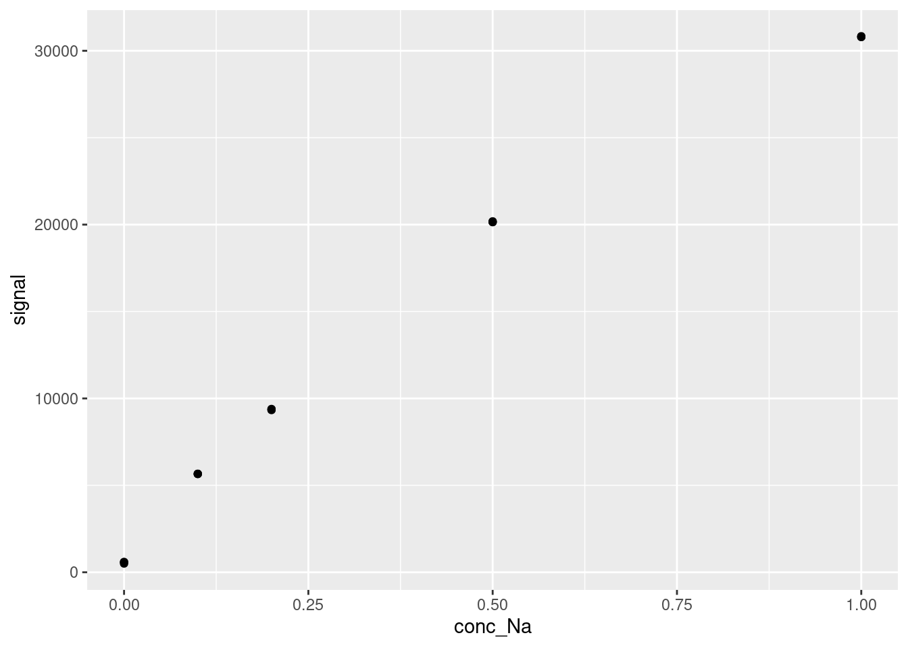
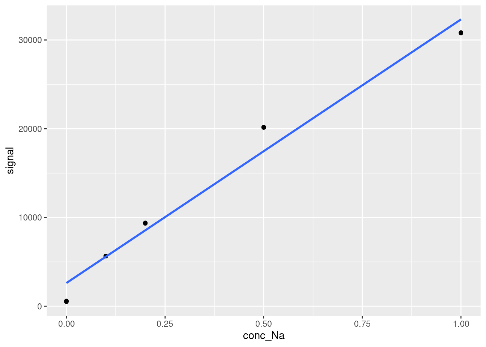
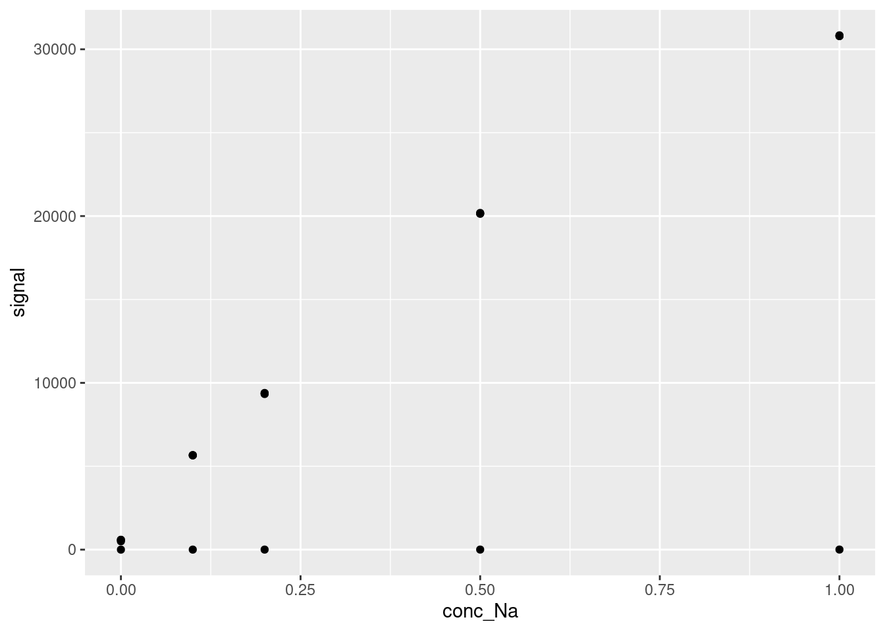
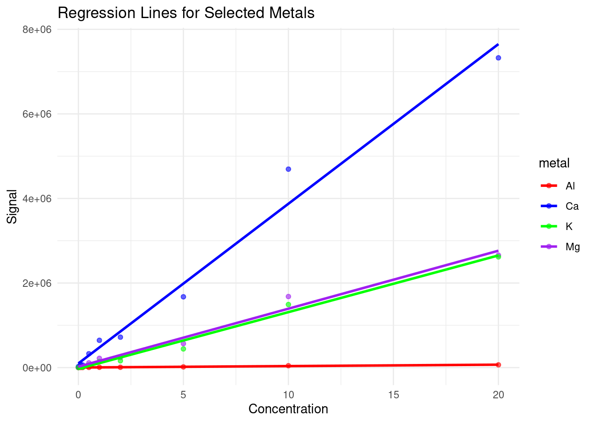

Chapter 19 Modelling: Linear Regression
Modelling is basically math used to describe some type of system, and they are a forte of R, a language tailor made for statistical computing. Every model has assumptions, limitations, and all around tricky bits to working. There is no shortage of modelling in a myriad of contexts, but in this chapter we’ll discuss and break down the most common model you’ll encounter, the linear regression model, in the most common context, the linear calibration model, using the most common function, lm.
You have probably encountered the linear regression model under the pseudonym “trend-lines”, most likely generated by Excel’s “add trend-line option” (as in CHM135). While the models we’ll be constructing with lm work much the same mathematically, unlike Excel, R returns all of the model outputs. Correspondingly, it’s easy to get lost between juggling R code, the seemingly endless model outputs, and keeping yourself grounded in the real systems you’re attempting to model.
19.1 Modelling Theory
The linear calibration model relates the response of an instrument to the value of the measurand. The measurand is simply what we’re measuring, often the concentration of an analyte. So we use the measurand, which we can control via preparation of standards from reference material as the independent variable, with the instrument output being the dependent variable (as instrument response varies with concentration). Altogether we’re:
- Measuring the instrument response of standards of known concentration and samples of unknowns concentration.
- Calculating the linear calibration model (i.e. line of best fit) through our standards.
- Using the measurement model to calculate the concentration in our unknown from their respective instrument response.
This is summarized in the figure below.

Figure 19.1: Linear calibration model; figure modified from Hibbert and Gooding (2006).
Before we can calculate concentrations, we need a measurement model. In other words, an equation that relates instrument response to sample concentration (or other factors). For simple linear calibration, we use:
\[y = a + bx\] Where:
- \(y\) is the instrument response
- \(x\) is the independent variable (i.e. sample concentration)
- \(a\) and \(b\) are the coefficients of the model; otherwise known as intercept and slope, respectively.
We’ll gloss over some of the more technical aspects of modelling, and discuss other in more detail below. For now, know that:
- We’re assuming our linear model is correct (i.e. the instruments actually respond linearly to concentration).
- All uncertainties reside in the dependent variable \(y\) (i.e., no errors in preparation of the standards).
- The values of \(a\) and \(b\) are determined by minimizing the sum of the residuals squared.
- The residuals are the difference between the actual measured response and where it would be if it were on the calibration line.
Once we have our line of best fit, we can calculate the concentration of our unknown sample \(i\), from its measured response \(y_i\) by:
\[x_i = \frac{y_i - b}{a}\]
There is more going on under the hood than what we’re describing here, but this should be enough to get you up and running. If you would like a greater breakdown of linear calibration modelling, we suggest you read Chapter 5 of Data Analysis for Chemistry by Hibbert and Gooding. An online version is accessible via the University of Toronto’s Library. There is also no reason the instrument response must be linear. In fact, we spend a great deal of time arranging our experiment so that we land in the ‘linear range’. For details on developing non-linear calibration curves in R see Evaluating and Improving Model Performance.
19.2 Linear Regression in R
Now that we have a rough understanding of what we’re trying to do, let’s go over how to calculate linear regression models in R. Note model is a general term, in this situation we’ll be calculating a calibration curve. All calibration curves are models, but not all models are calibration curves.
For our example dataset we’ll import a dataset consisting of four analytical standards of sodium plus a calibration blank all run in triplicate. The standards were measured via flame atomic emission spectroscopy (FAES). Let’s import the FAES calibration results we saw in Transform: Data manipulation. As we’ve already seen, our data is composed of four standards and a blank analyzed in triplicate. Since we’re focusing on modelling, we’ll treat the blank as a standard in our model fitting. So let’s import our dataset. Note that to make our tables more readable in the HTML version of this textbook, we are generating our tables using the DataTables library using the format DT::datatable():
FAES <- read_csv(file = "data/FAES_original_wide.csv") %>%
pivot_longer(cols = -std_Na_conc,
names_to = "replicate",
names_prefix = "reading_",
values_to = "signal") %>%
separate(col = std_Na_conc,
into = c("type", "conc_Na", "units"),
sep = " ",
convert = TRUE) %>%
mutate(type = "standard")
DT::datatable(FAES)And let’s quickly plot our data. You should always visualize your data before modelling, especially for linear calibration modelling. Visualizing your data is an easy way to spot trends and gross errors in your data.

Let’s use the lm function to calculate the linear relationship between the signal as a function of conc_Na:
##
## Call:
## lm(formula = signal ~ conc_Na, data = FAES)
##
## Coefficients:
## (Intercept) conc_Na
## 2615 29707Reading the code above:
- We’re using the FAES data we created earlier:
data = FAES. - We’re comparing
signal(the dependent variable) toconc_Na(the independent variable) via the tilde~. The way to read this is: “signal depends on concentration”. - We’re fitting a linear model for comparing these two variables indicated by
lm() - The model’s outputs are stored in the
lmfitvariable.
As we can see, the model outputs are pretty brief and not much more than Excel’s outputs.
We can use summary() to extract more information to better understand our model:
##
## Call:
## lm(formula = signal ~ conc_Na, data = FAES)
##
## Residuals:
## Min 1Q Median 3Q Max
## -2112.78 -1528.53 70.51 821.50 2718.20
##
## Coefficients:
## Estimate Std. Error t value Pr(>|t|)
## (Intercept) 2615.1 665.2 3.931 0.00172 **
## conc_Na 29707.2 1304.5 22.772 7.34e-12 ***
## ---
## Signif. codes: 0 '***' 0.001 '**' 0.01 '*' 0.05 '.' 0.1 ' ' 1
##
## Residual standard error: 1824 on 13 degrees of freedom
## Multiple R-squared: 0.9755, Adjusted R-squared: 0.9737
## F-statistic: 518.6 on 1 and 13 DF, p-value: 7.341e-12This summary provides much more information:
- Under ‘Residuals’, we can see some summary statistics on the residuals of our fit (we will discuss residuals much more in the next chapter)
- Under ‘Coefficients’, the fit value (called ‘Estimate’) for each variable, and their predicted standard errors are given. Note that these standard errors are an approximation, but they are good enough to use for most cases.
- The next two columns under ‘Coefficients’, ‘t value’ and ‘Pr(>|t|)’, represent a statistical test of the significance of the model fit. Here, ‘Pr(>|t|)’ describes the probability (or p-value) that the fit value for each variable is nonzero (i.e. that the variable contributes significantly to the model). This is described qualitatively by the significance codes - in this case, the intercept has a p-value < 0.01, and the conc-Na (our independent variable) has a p-value of <0.001.
- The residual standard error is the root mean square error of all of the residuals of the model.
- The \(R^2\) values represent the proportion of the variance in the dependent variable that can be explained by the independent variable(s). In general, it is better to use the ‘Adjusted R-squared’, over the ‘Multiple R-squared’, as the ‘Adjusted R-squared’ corrects for a bias in \(R^2\) introduced by adding additional variables.
- The F-statistic and its p-value compare the model you generated to a model where all variables are zeros (essentially a version of the t values above, but for the overall model). If your p-value is below your threshold of statistical significance (often 0.05), then the variables you included significantly improved the model.
The information provided in the model summary can be used to evaluate how well your model describes your data (in our case, how effective the calibration curve we have generated is in describing the instrumental response to our compound) and to predict new values.
19.3 Visualizing your models
While the statistical outputs above provide a lot of information about the quality of our model fit, often the best way to evaluate a model’s performance is visualization. R provides an easy set of tools for visualizing models within the ggplot framework. This can be applied to any model, not just linear regression, but we are showing it here for the calibration curve. To plot a model over existing data, we take our standard scatter plot generated using geom_point and we add a geom_smooth object on top of it.
modelPlot <- ggplot(data = FAES,
aes(x = conc_Na,
y = signal)) +
geom_point() +
geom_smooth(method = 'lm', se=FALSE)
modelPlot
The geom_smooth function can be used to plot a variety of trend lines over data. In our case, we specify method = 'lm' to ensure that the trend line plotted is a straight line. We also specify se = FALSE to stop the function from plotting error bands around the line, which it would otherwise do by default.
We can also add the equation and \(R^2\) value of a model onto a ggplot object using a function from the ggpmisc library, stat_poly_eq as follows (note that we saved our previous plot as modelPlot, so we can just add the new layer on top):
modelPlot <- modelPlot +
ggpmisc::stat_poly_eq(formula = y ~ x, # formula uses aesthetic names
rr.digits = 4, # reported digits of r-squared
aes(label = paste(after_stat(eq.label), after_stat(rr.label), sep = "~~~")),
parse = TRUE, size = 5)
modelPlot
The syntax for stat_poly_eq is a little complicated, but it is just a way of showing a polynomial equation based on statistical analysis of a dataset. The polynomial itself is specified by formula = y ~ x (using the names of the variables from the ggplot aes() call). The number of digits in the \(R^2\) value is given by rr.digits = 4, the label is given by aeslabel = paste(after_stat(eq.label), after_stat(rr.label), sep = "~~~"). Most of this is formatting - the important parts are after_stat(eq.label), which calculates the label for the fit equation after statistical analysis, and after_stat(rr.label), which is the same thing but for the \(R^2\) value. You can also change the size of the label by changing size = 5.
19.4 Accessing and using model outputs
Once you have generated a model, you likely want to use it to make predictions. For simple models like calibration curves, the simplest way to do this is to access the coefficients. Let’s start by importing a dataset to make predictions on:
FAESSamples <- read_csv(file = "data/FAESUnknowns.csv") %>%
pivot_longer(cols = -c(sample, `dilution factor`),
names_to = "replicate",
names_prefix = "reading_",
values_to = "signal")
DT::datatable(FAESSamples)We can extract the coefficients of our model (recall we stored our calibration curve in the variable lmfit) using the coef function:
## (Intercept) conc_Na
## 2615.119 29707.170Then, we use some base R indexing syntax in brackets to select which coefficient we want:
intercept <- coef(lmfit)[1]
slope <- coef(lmfit)[2]
paste("The equation of our calibration curve is: y = ", intercept, " + ", slope,"*x", sep="")## [1] "The equation of our calibration curve is: y = 2615.11945030675 + 29707.1701380368*x"We can apply this calibration curve to our new data directly within tidyverse using the mutate function. Recall that we are trying to calculate our dependent variable, concentration, so we solve the calibration curve equation for x:
FAESSamples <- FAESSamples %>%
mutate("instConc" = (signal - intercept)/slope)
DT::datatable(FAESSamples)Correcting for the supplied dilution factors and summarizing our data a little bit, we have easily calculated the concentrations from a selection of new samples in an automated fashion:
19.5 Augmented, glanced, and tidied model outputs
In most cases, the base lm function and summary output and will be sufficient for your needs, but there are other ways of presenting model outputs using the broom package, which may or may not be useful. Either way, it’s helpful to be aware of them.
19.5.1 Tidied outputs
The function that is most likely to be useful to you is the tidied output, which we will use in the next section. Tidied model outputs allow you to easily access model fit parameters in a tidyverse style. This can be accessed by calling the broom function tidy on the model you have generated. This creates a dataframe (or rather, a tibble) which we can visualize as normal:
As you can see, the output table has each variable in a row with their respective fit values (called estimate again here), standard errors, t-values, and p-values. These are the same outputs as were given in from the summarize function, but tabulated for easy access. Similar to using the coef function, you can extract model fits to predict new values relatively easily using this format with base R indexing via bracket notation as below. In the next section, we will use this format to automatically apply multiple different calibration curves to a dataset.
tidyIntercept <- tidied[1,2]
tidySlope <- tidied[2,2]
paste("The equation of our calibration curve is: y = ", tidyIntercept, " + ", tidySlope,"*x", sep="")## [1] "The equation of our calibration curve is: y = 2615.11945030675 + 29707.1701380368*x"19.5.2 Glanced outputs
The ‘Glanced’ output is a way of summarizing the quality of the model fit in a single row, so that it can be easily included in a dataframe. The glanced output again generates a tibble using the broom function glance:
The glanced output has most of the same outputs as summary, plus some extra.
Variables described previously include the two \(R^2\) values (remember we want to use the adjusted R-squared in almost all cases), sigma, which is the estimated standard error of the residuals, and statistic, p.value, and df, which are the F-statistic, its p-value, and the number of degrees of freedom used in the numerator of the F-statistic.
New outputs include deviance, logLik, AIC, BIC, the number of observations, and the number of residual degrees of freedom. Deviance is the sum of the squares of the residuals of the model. The logLik is the log-likelihood of the model used to calculate AIC and BIC, the Akaike information criterion and Bayesian information criterion, which are estimations of the model quality. For additional information on these values, you will have to delve into the statistics literature.
19.5.3 Augmented outputs
Finally, the augmented output is a complete summary of the fit behavior of the model, generating a tibble using the broom function augment:
Here, you can see the dependent variable (here signal), the independent variable (here conc_Na), the fitted model response (.fitted), the residual for that fit value (.resid), the diagonal of the hat matrix (.hat), the model standard error when the listed observation is dropped from the model (‘.sigma’), the Cooks distance of that observation (.cooksd), and the standardized residuals (.std.resid). It is unlikely that you will use most of these values, but it is useful to know how to calculate them, and we will revisit the residuals in the next chapter.
19.6 Building Linear Regressions for Multiple Analytes
In many cases in analytical chemistry, we find ourselves with multiple analytes, each of which will have their own calibration curves. We can easily use the power of R to calculate these calibration curves, store them in a logical way, and apply them to new data in an automated fashion.
19.6.1 Dataset
The dataset metalConc contains information on metal concentrations measured in parts per million, or ppm, and corresponding signal values (counts per seconds, or cps) from the inductively coupled plasma optical emission spectrometer (ICP-OES) in ANALEST for 4 metals: Aluminum, Magnesium, Calcium, and Potassium. We will also import a dataset of samples run on the same ICP-OES to apply our new calibration curves. Take a look at the calibration data before proceeding with our analysis (we have done some pre-analysis to get it in the right format here):
19.6.2 Building a Linear Regression for Each Analyte
Now, we will build separate linear regression models for each metal to predict signal values based on metal concentrations. This can be done either in base R using a for loop or in Tidyverse using the mutate function. We will show both methods.
19.6.2.1 Tidyverse
The Tidyverse approach is generally preferred in R, as the code is easier to read and faster to implement, and the results are accessible automatically. Our data is not currently in tidy format, so let’s pivot it into a tidy format first. We use the pivot_longer function to turn our separate metal columns into two columns, one containing the metal identity for each sample, and the other containing the signal intensity for that metal:
tidiedMetals <- metalConc %>%
pivot_longer(cols = -Concentration, names_to = "metal", values_to = "Signal")
DT::datatable(tidiedMetals)Now we can construct calibration curves for each metal separately all within the pipe, and extract the fit parameters using the broom tidy function. This is a little complicated, so let’s go through it step-by-step.
1. We group the data by metal using the group_by function to allow us to create separate calibration curves for each metal
2. We nest the data using the nest function, which stores the entire dataset for each metal into its own column, “nesting” those dataframes within our larger dataframe.
3. We can then build models off of those datasets using the mutate function combined with the map function. map tells R that we want to apply a function (in this case lm) to data that we specify. We assign the generated models to a new column, model, using mutate.
4. Within the same mutate call, we use map to call the tidy function on each model individually and assign it to a new column called tidied, which stores the entire dataframe in the same column
5. We call unnest to extract the dataframes contained within tidied
6. We generate a data table to view our newly analyzed data
tidyCalCurve <- tidiedMetals %>%
group_by(metal) %>%
nest() %>%
mutate(model = map(data, ~lm(Signal ~ Concentration, data = .x)),
tidied = map(model, tidy)) %>%
unnest(tidied)
DT::datatable(tidyCalCurve, options = list(scrollX = TRUE))We now have a tidy version of our calibration curves with the models still accessible under the ‘model’ column, and the values, standard errors, and p-values of our slope and intercept.
If we instead wanted to evaluate how well each calibration curve worked, we would use the glance function, like so, which is doing exactly the same thing but with the glance function instead of the tidy function.
glancedCalCurve <- tidiedMetals %>%
group_by(metal) %>%
nest() %>%
mutate(model = map(data, ~lm(Signal ~ Concentration, data = .x)),
glance = map(model, glance)) %>%
unnest(glance)
DT::datatable(glancedCalCurve, options = list(scrollX = TRUE))You can feel free to do whatever data manupulation you want to get the right combination of estimate values and measurements of goodness of fit. For example, say you wanted slope, intercept, and adjusted R-squared in columns for a report. You could perform the following functions. There’s a lot going on here, so we’ll go through this step-by-step as well.
1. This time we have generated both tidied and glanced dataframes for each model and nested them as above.
2. This time, we unnest glance and select only the information we want, in this case retaining the metal, adj.r.squared, and tidied columns
3. Then, we unnest tidied and use pivot_wider to convert the tidyverse format tidy output into wide format results for legibility, setting the column names based off of the tidy term column and the results from the estimate column
4. We rename the terms for legibility
5. We select only the results we want
6. We generate a readable data table
combinedCalCurve <- tidiedMetals %>%
group_by(metal) %>%
nest() %>%
mutate(model = map(data, ~lm(Signal ~ Concentration, data = .x)),
tidied = map(model, tidy),
glanced = map(model, glance)) %>%
unnest(glanced) %>%
select(metal, adj.r.squared, tidied) %>%
unnest(tidied) %>%
pivot_wider(id_cols = c(metal, adj.r.squared), names_from = 'term', values_from = 'estimate') %>%
rename(slope = Concentration, intercept = `(Intercept)`, adjRsquared = adj.r.squared) %>%
select(metal, slope, intercept, adjRsquared)
DT::datatable(combinedCalCurve)You can always directly access the values in any of these formats using the select and filter functions. Here’s how to do that with the above table, accessing the slope of the Ca calibration curve as an example. The double square brackets access the specific value instead of returning a dataframe with only one element.
## [1] 377609.7If we want to use these values to calculate new concentrations in the metalSignals dataframe, we just have to do a little bit of code using tidyverse. Here is one way to do it by joining the calibration dataset with our new samples using the full_join function. This allows us to add one dataframe (here tidyCalCurve) to another (metalSignals), by comparing the values of one of the columns (here metal):
#Start by creating our calibration curves in wide format, with the metal in one column, the slope in the second, and the intercept in the third.
tidyCalCurve <- tidiedMetals %>%
group_by(metal) %>%
nest() %>%
mutate(model = map(data, ~lm(Signal ~ Concentration, data = .x)),
tidied = map(model, tidy)) %>%
unnest(tidied) %>%
pivot_wider(id_cols = c(metal), names_from = 'term', values_from = 'estimate') %>%
rename(slope = Concentration, intercept = `(Intercept)`) %>%
select(metal, slope, intercept)
#Then, we join the two datasets with 'metal' as the common column between them
tidyResults <- full_join(metalSignals, tidyCalCurve, by = 'metal')
#Finally, we calculate the concentrations for each of our samples.
tidyResults <- tidyResults %>%
mutate(concentration = (Signal - intercept)/slope)
#And output our results in a readable data table
DT::datatable(tidyResults, options = list(scrollX = TRUE))As you can see, many of our samples have concentrations close to zero or even negative. Negative concentration values can arise when signal values fall below the intercept of the linear regression model, indicating a deviation from the model’s assumptions or that the concentration of the analyte is below the limit of detection of an instrument, where instrument noise or background signal may influence measurements. Negative concentrations lack meaningful interpretation in chemical analysis and are often considered artifacts of the model’s limitations. In the next chapter, we will discuss how to manage these types of issues through calculating limits of detection, applying nonlinear calibrations, and weighting our calibration curves to increase the accuracy of our calibration models.
19.6.2.2 Base R
Here is one way to perform the same procedure to calculate linear regressions for each analyte in base R:
# Create lists to store metal names, slope, intercept, and R^2 for each metal
metals <- colnames(metalConc)[2:5]
slope <- c()
intercept <- c()
R2 <- c()
# Iterate over each metal
for (metal in metals) {
# Build linear regression model
model <- lm(metalConc[[metal]] ~ Concentration, data = metalConc)
# Extract slope, intercept, and R squared
slope[metal] <- coef(model)[2]
intercept[metal] <- coef(model)[1]
R2[metal] <- summary(model)$r.squared
}
#Combine the resulting lists into a tibble
metalResults <- tibble(metal = metals, slope, intercept, R2)
#Generate a datatable to output the
DT::datatable(metalResults, options = list(scrollX = TRUE))The code above uses a for loop, that was discussed in the Loops section of this resource. The loop will move through each metal in the dataset and then store the slope, intercept and \(R^2\) values in their own vectors. We then combine these vectors into a table. This table can be accessed and used exactly as in the Tidyverse methods.
19.6.3 Visualizing Linear Regressions for Each Analyte
After constructing linear regression models for each metal, visualizing these results can provide valuable insights into the relationships between metal concentrations and signal values. Below, we will create a single scatterplot for four selected metals along with their regression lines. This visualization will help in assessing the fit of the models and understanding the variance in signal values as a function of concentration. To make this plot, we will be using the tidied version of the dataset, produced using pivot_longer above.
# Create a scatterplot for each metal with its regression line
ggplot(tidiedMetals, aes(x = Concentration, y = Signal, color = metal)) +
geom_point(alpha = 0.6) +
geom_smooth(method = "lm", se = FALSE, aes(color = metal)) +
labs(title = "Regression Lines for Selected Metals", x = "Concentration", y = "Signal") +
theme_minimal() +
scale_color_manual(values = c("red", "blue", "green", "purple"))
Based on this plot, we can see that our instrument is much more sensitive to calcium than the other metals, and has very low sensitivity to aluminum, which may explain some of the odd concentrations we observed previously.
19.7 Conclusion
In conclusion, while linear regression serves as a powerful tool for analyzing the relationship between chemical concentrations and instrumental signals, its applicability may be limited by the assumption of linearity. Negative concentration values observed in linear regression analyses highlight the need for robust statistical techniques and critical evaluation of instrument responses. In the next chapter, we will explore some alternative modeling approaches as well as some techniques for evaluating the effectiveness of the models produced.
19.8 Further reading
As previously stated, we highly recommend reading Chapter 5: Calibration from Data Analysis for Chemistry by Hibbert and Gooding for a more in-depth discussion of linear calibration modelling. The book can be accessed online via the University of Toronto’s Library.
For a greater discussion on modelling in R, see Modelling in R for Data Science.
19.9 Exercise
There is a set of exercises available for this chapter!
Not sure how to access and work on the exercise Rmd files?
Refer to Running Tests for Your Exercises for step-by-step instructions on accessing the exercises and working within the UofT JupyterHub’s RStudio environment.
Alternatively, if you’d like to simply access the individual files, you can download them directly from this repository.
Always remember to save your progress regularly and consult the textbook’s guidelines for submitting your completed exercises.